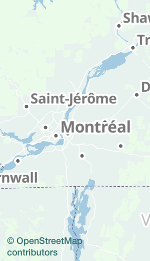
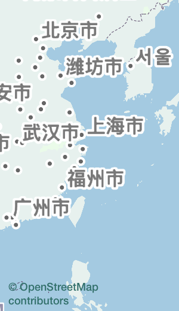
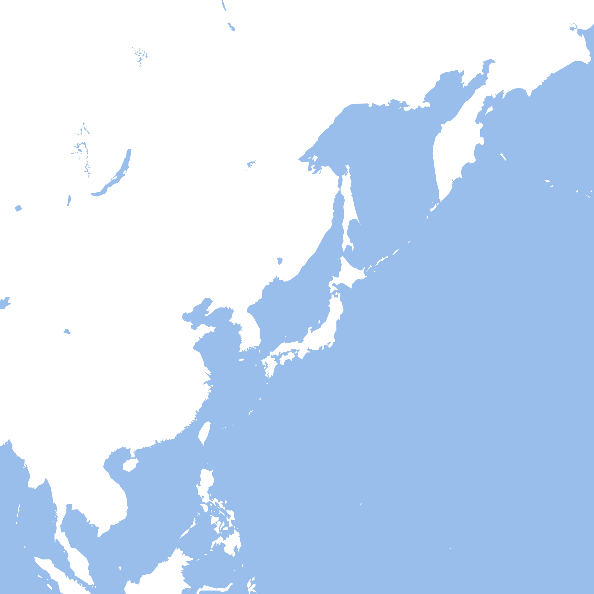
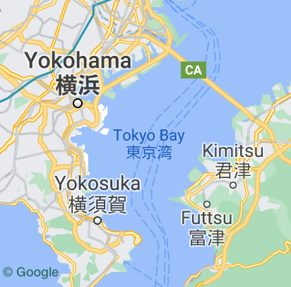
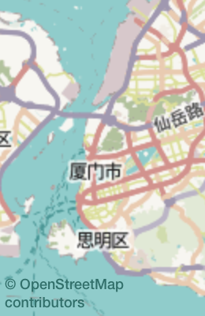
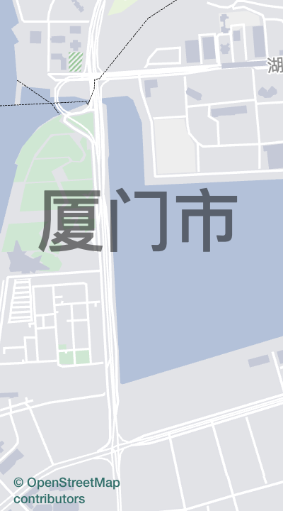

Why Text?
What is a map?
- Geometry, in some spatial reference system
- Textual properties, possibly rendered as map labels
Even if labeling is outside the scope of MapML, text presentation is essential to maps and worthy of forward thinking

Background and motivation
- Myself: running OpenStreetMap-based services since 2013, focus on projects in East Asia
- Protomaps: Map API using OSM
- OSM has a wealth of multilingual content
- For this short presentation: narrow focus on Han (Chinese) script - only one part of global text
A simple dataset...
<feature>
<geometry>
<coordinates><point>139.7400553 35.6432274</point></coordinates>
</geometry>
<!-- Hong Kong, population -->
<properties>香港,75000000</properties>
</feature>
<feature>
<geometry>
<coordinates><point>114.1849161 22.3506270</point></coordinates>
</geometry>
<!-- Minato-ku (a municipality in Tokyo), population -->
<properties>港区,243000</properties>
</feature>
A simple "map" in HTML...
香港
7,500,000
港区
243,000

zh-hant (Traditional Chinese)
港
jp (Japanese)
港
Han Script: Locale Variants
- Place names share a codepoint within Unicode "CJK Unified Ideographs": U+6E2F 港
- Variations are common. examples: 艹,辶 have different # of strokes depending on region
- Place names are proper nouns, and users may be sensitive to how they are displayed
Maps are inherently multilingual documents; multiple languages on one map is unexceptional!
Web Standards
<span lang="zh-hant-hk">香港</span>
<span lang="ja">港区</span>
HTML standards solution: element-level lang attributes. Correct display of localized text is supported by markup and implemented in major browsers. Pan-CJK fonts ship with operating systems
also, lang attributes are recommended to power accessibility features such as screen readers.
Documents vs. Maps
HTML
- Recommended: one
lang attribute at document level
<html lang="en-us">
- In cases of multilingual text, element-level
lang tagging
Maps
- Many map services provide only one version for all user languages
- Client-rendered maps may still display local names + user transliteration

Documents vs. Maps
- Do graphics elements in HTML documents (SVG, Canvas) support
lang attributes at the sub-document (element) level?
- What is the current state of locale-specific text for web maps?
- What enhancements to web standards would be useful?
SVG Results
<svg>
<text x="70" y="200" lang="zh-hant">香港</text>
<text x="150" y="150" lang="ja">港区</text>
</svg>
| Browser |
document-level lang |
element-level lang |
| Safari 13 |
✅ |
❌ |
| Firefox 79 |
✅ |
✅ |
| Chrome 84 |
✅ |
❌ |
| Edge 85 |
✅ |
❌ |
Canvas Results
<script>
var ctx = document.getElementById('canvas').getContext('2d');
ctx.font = '30px sans-serif'; // no way to specify lang!
ctx.fillText('香港', 70, 200);
ctx.fillText('港区', 150, 150);
</script>
| Browser |
document-level lang |
element-level lang |
| Safari 13 |
✅ |
❌ |
| Firefox 79 |
✅ |
❌ |
| Chrome 84 |
✅ |
❌ |
| Edge |
✅ |
❌ |
Canvas FormattedText proposal

Server-rendered maps...
- Slippy maps: server-generated images generally default to one region via fonts
- OpenStreetMap default tileset: policy is display place names in the local language
- However, place names in China rendered using Japan variants
- Work to be done: add features to Mapnik, data to support locale-specific text
openstreetmap-carto: What about Han Unification?
Client-rendered maps with WebGL
- State of the art WebGL map renderers generate or download Signed Distance Fields (SDF)
- Great graphics performance; tradeoff is complexity, need for downloads over network, visual fidelity
- Shipping an entire text shaping and rendering stack via JS or even WASM has little in common with web standard text implementations

Client-rendered hybrid approach
- Tangram - Mapzen project, now Linux Foundation
- web standard text capabilities via Canvas: Variable fonts, Indic scripts, right-to-left, CJK variant fonts
- Also: OpenLayers, Protomaps 2D
- Text is rendered at a single size
- OffscreenCanvas vital to making these performant
Aside: HTML <video>
Video has accompanying WebVTT standard for presenting timed text
© 2008, Blender Foundation / www.bigbuckbunny.org
WebVTT Results
Use explicit Cue Language Spans for assigning presentation language
WEBVTT
label
00:00.000 --> 00:05.000 line:50%
<lang zh>港</lang> <lang ja>港</lang>
| Browser |
document-level lang |
cue-level lang |
| Safari 13 |
❌ |
❌ |
| Firefox 79 |
✅ |
✅ |
| Chrome 84 |
✅ |
❌ |
| Edge 85 |
✅ |
❌ |
Conclusions
- Multi-language or multi-script maps are not edge cases
- Text documents on the web support element-level lang attributes - an improvement over current web maps
- Graphical standards:
svg, canvas, video, map - if responsible for text presentation - should have these capabilities as well